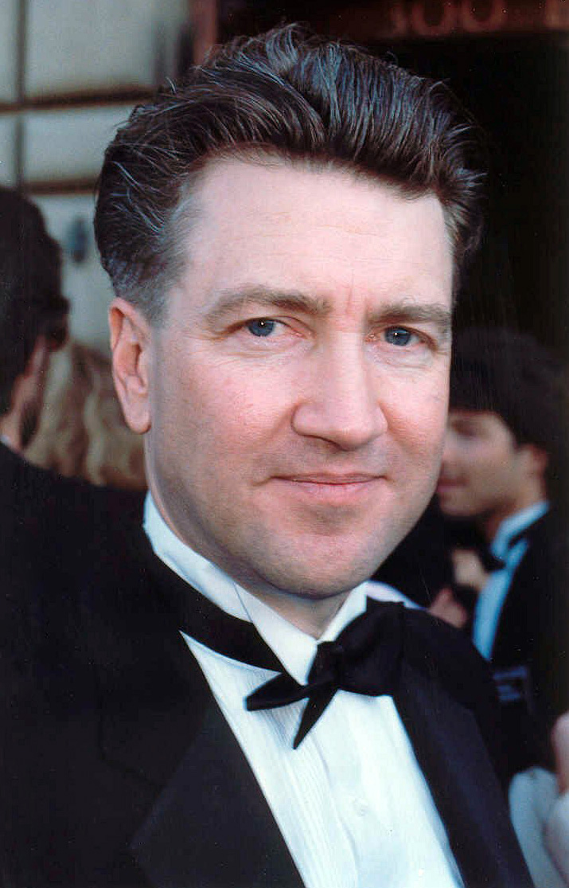
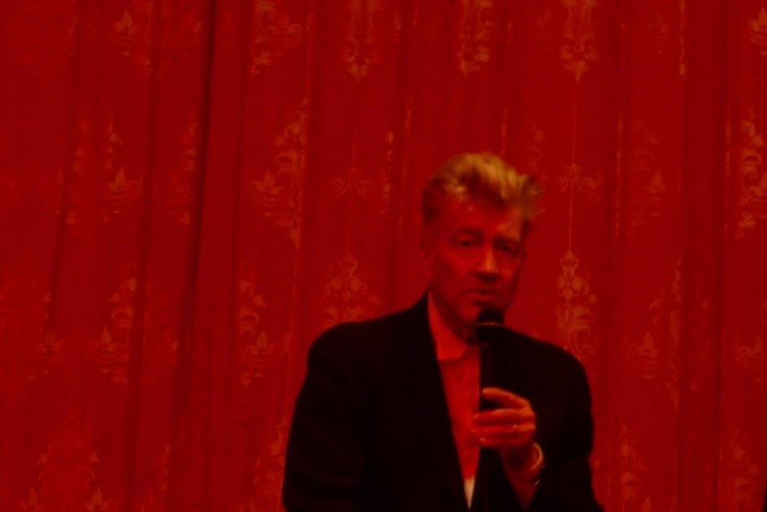
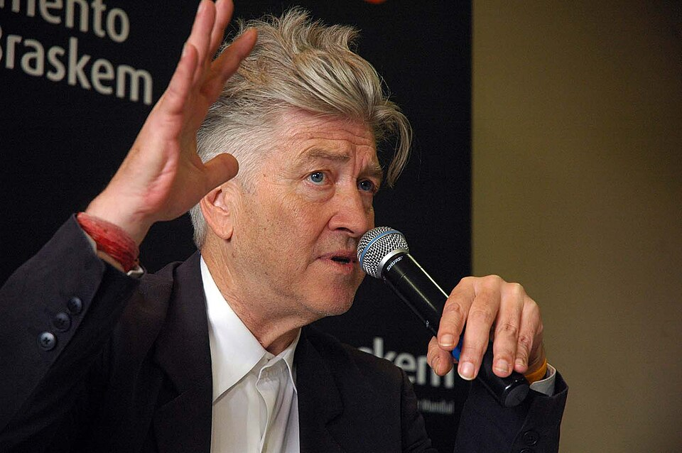
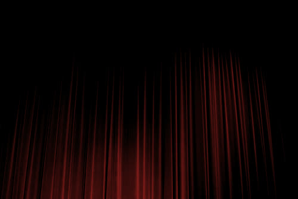
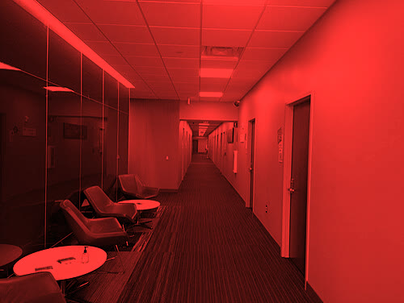
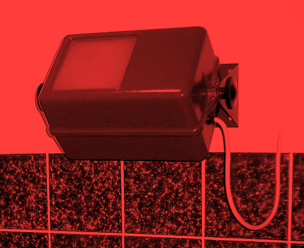
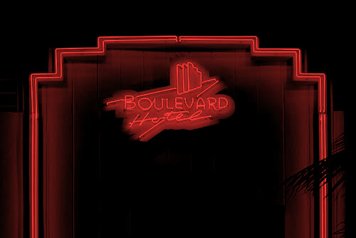
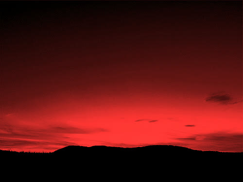
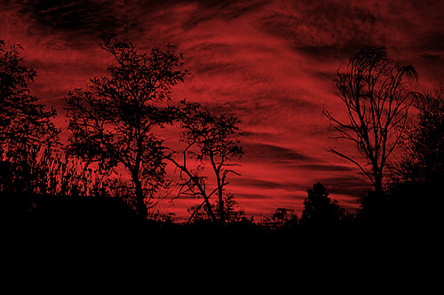
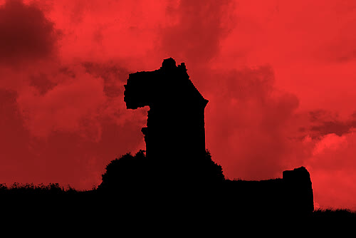

What was asked
The task, the target audience and the genre conventions the project had to work with.
David Lynch on sound
My inspiration is David Lynch, the director of Eraserhead, Blue Velvet and Twin Peaks, and what he says about sound: that it carries as much of a film as the picture does.



Films are 50 percent visual and 50 percent sound. Sometimes sound even overplays the visual.
— David Lynch
I'm real fascinated by presences — what you call 'room tone.' It's the sound that you hear when there's silence, in between words or sentences. It's a tricky thing, because in this seemingly kind of quiet sound, some feelings can be brought in, and a certain kind of picture of a bigger world can be made.
— David Lynch, on the sound of Eraserhead
Sound is 50% of the picture, if not more, at least it is for me, and to get sound to marry to the picture is the trick.
— David Lynch, 2020 interview
The red room
What the film should feel like: enigmatic, quiet and uneasy, all in red.







On set
Behind-the-scenes stills, the edit, and how the sound was built.
Looking back
How well the final piece met the brief and affected its audience.
What worked
To be added.
Next time
To be added.